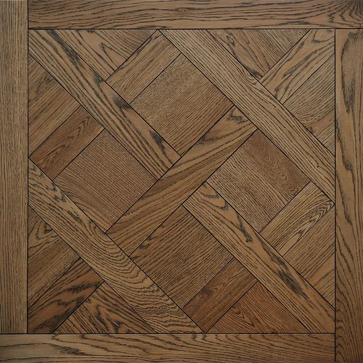
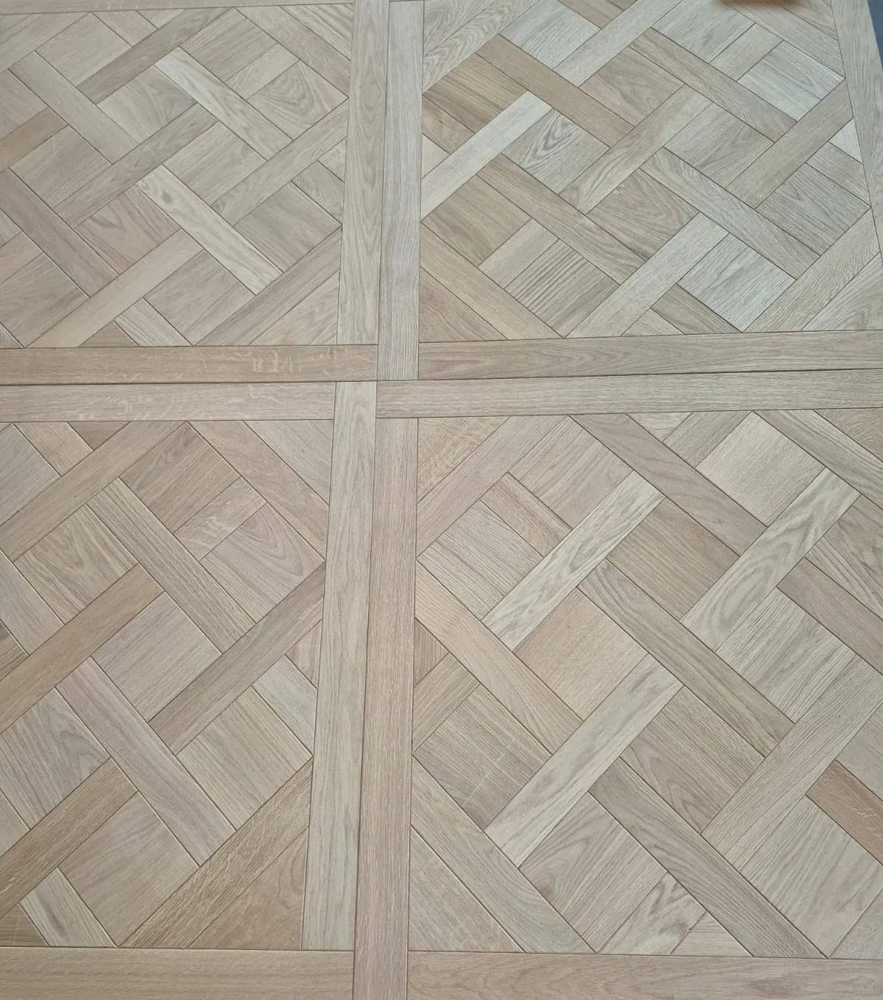
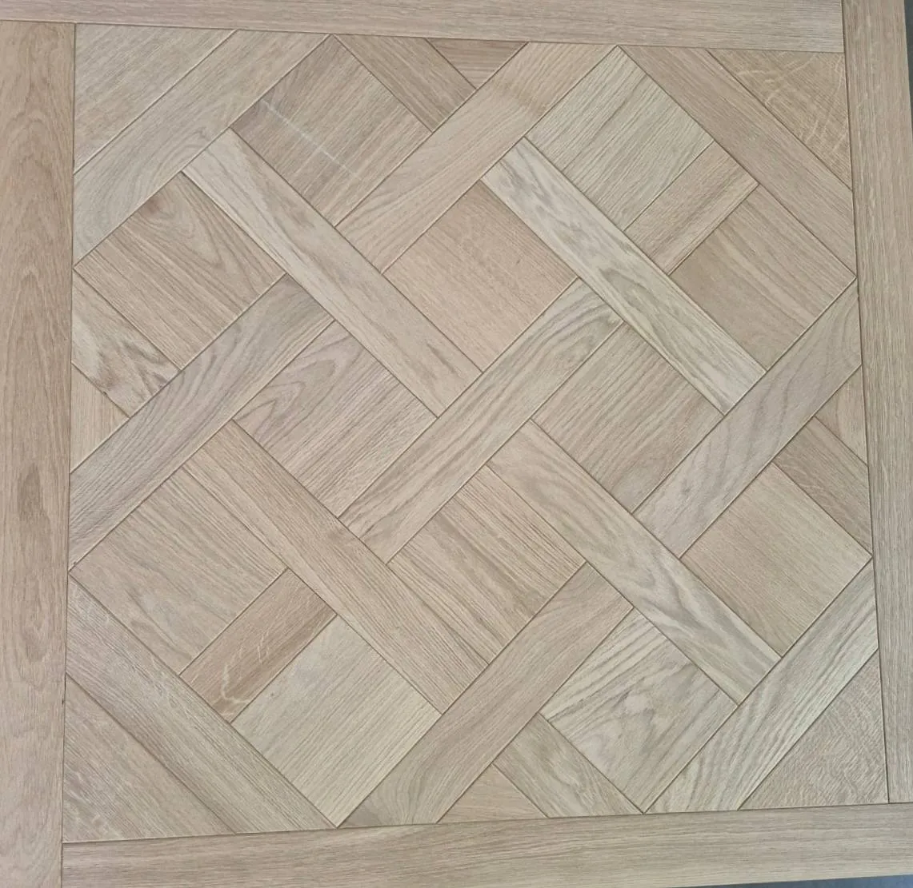
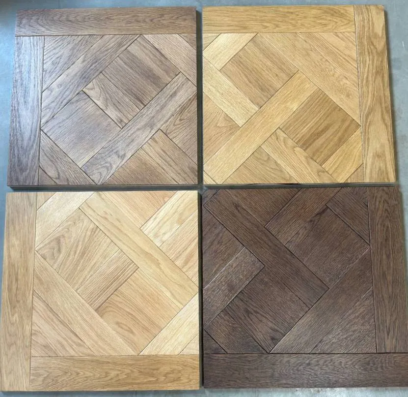
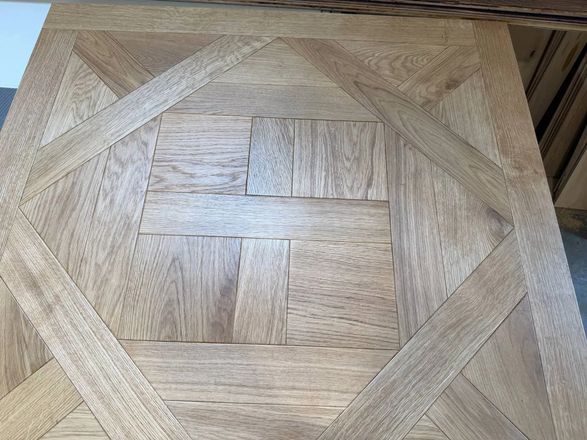

Modular Oak Versailles Parquet
Modular oak parquet is a decorative flooring solution made from natural oak and produced in the form of ready-made modules with various layout patterns. It combines the natural beauty of wood, durability, and extensive possibilities for creating unique interior designs.
EURO-LAM manufactures modular parquet according to both standard and custom layout patterns. Available options include the classic Versailles and Versace designs, as well as other decorative compositions developed according to customer requirements.
Technical Specifications
Technical Specifications
| Parameter | Value |
|---|---|
| Wood Species | Oak |
| Product Type | Modular Oak Parquet |
| Layout Patterns | Versailles, Versace |
| Module Size | 980 × 980 mm / 1000 × 1000 mm* |
| Production | Custom-made |
* Module dimensions and layout patterns may vary according to customer requirements.
Module Designs and Layout Patterns




Production Process
The production of modular oak parquet includes careful selection of high-quality oak timber, kiln drying, precise machining of individual elements, and assembly of ready-made modules according to the selected layout pattern.
Modern woodworking equipment ensures high dimensional accuracy of each component, providing excellent fitting quality, structural stability, and a premium appearance after installation.
EURO-LAM manufactures both classic Versailles-style modules and other decorative layout patterns according to individual design concepts and customer preferences.
← Back to Home